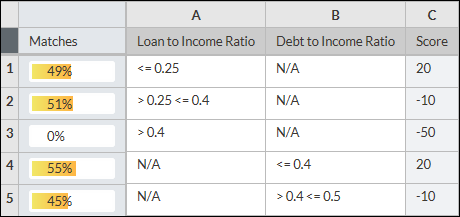

Profiling Results Display Options
Rule profiling results are displayed based on the decision table type and the display options.
There are three different options for displaying the profiling results:
- Bar chart
- The length of the yellow bar is proportional to the percentage of data that matches the conditions in a rule.
- Percentage
- The percentage of the total number of value sets in the dataset that match the conditions. A value set is equal to one row of data in the dataset.
- Count
- The total number of value sets in the dataset that meet the conditions.
The bar chart and percentage are the default settings, as shown in this example of a Single-axis (columns) decision table:

Decision Table with Rule Profiling Results
You can configure the display options to include the count (the total number of value sets in the dataset that meet the conditions) in the Set Options Display window.
The way the profiling results are displayed depends upon the decision table layout.
| Decision Table Type | Display Results |
|---|---|
| Single-axis (Columns) | Rule profiling results are displayed in a separate frozen Matches column next to the row index column. |
| Double-axis | Rule profiling results are displayed within the action cells. |